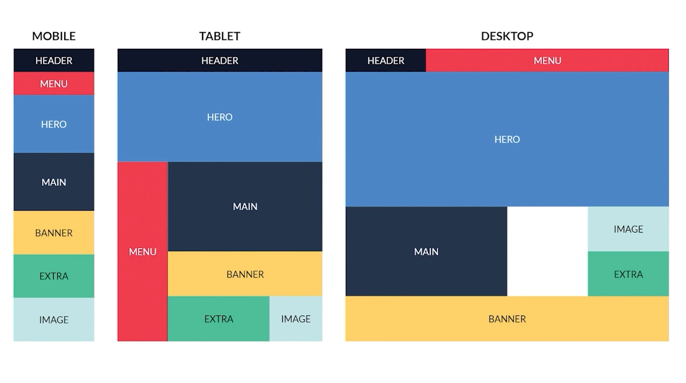
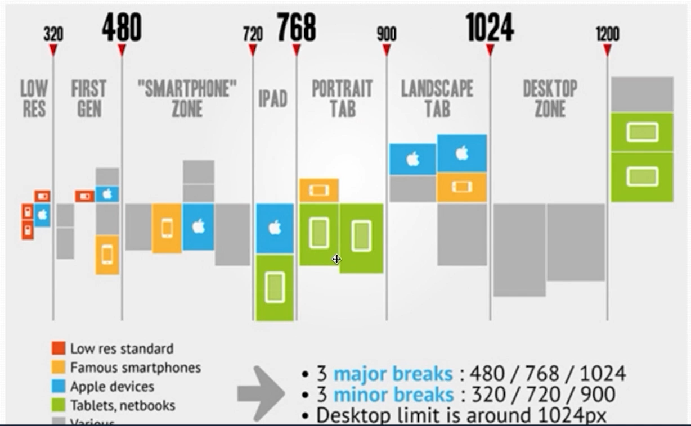
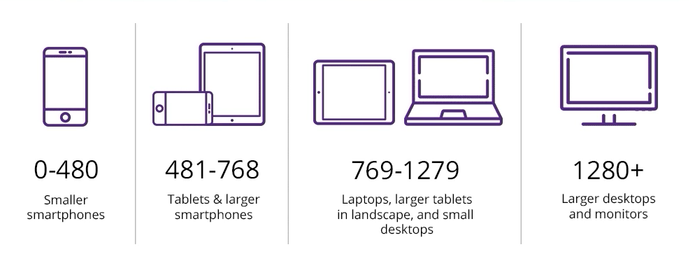

O CSS Grid Layout é um sistema de layout bidimensional.
O CSS Grid Layout é um sistema de layout bidimensional.
O CSS Grid Layout é um sistema de layout bidimensional.

O CSS Grid Layout é um sistema de layout bidimensional que permite criar designs complexos e responsivos de forma fácil e eficiente. Ele é baseado em uma grade de linhas e colunas, onde os elementos podem ser posicionados e dimensionados de acordo com as necessidades do design.
Com o CSS Grid Layout, é possível criar layouts flexíveis e adaptáveis

O CSS Grid Layout é composto por dois eixos: o eixo horizontal (linhas) e o eixo vertical (colunas). Os elementos podem ser posicionados em qualquer célula da grade, e é possível controlar o tamanho das linhas e colunas usando unidades de medida como pixels, porcentagens ou a unidade fr (fração).
Além disso, o CSS Grid Layout oferece recursos avançados, como a capacidade de criar áreas de grid nomeadas, alinhar itens dentro da grade e controlar o fluxo dos elementos. Ele é amplamente suportado pelos navegadores modernos e é uma ferramenta poderosa para criar layouts complexos e responsivos em páginas web.
Item1

Item3
Item4
Item5
Item6